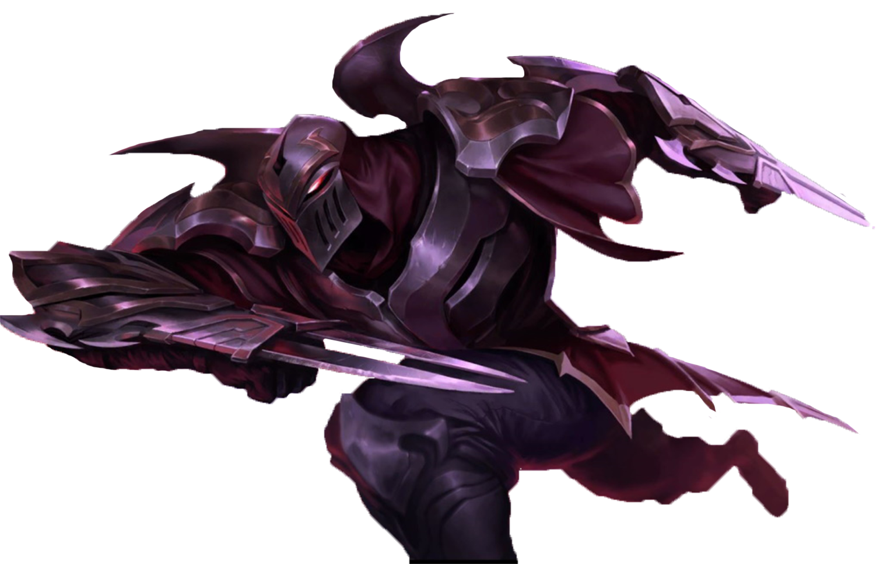
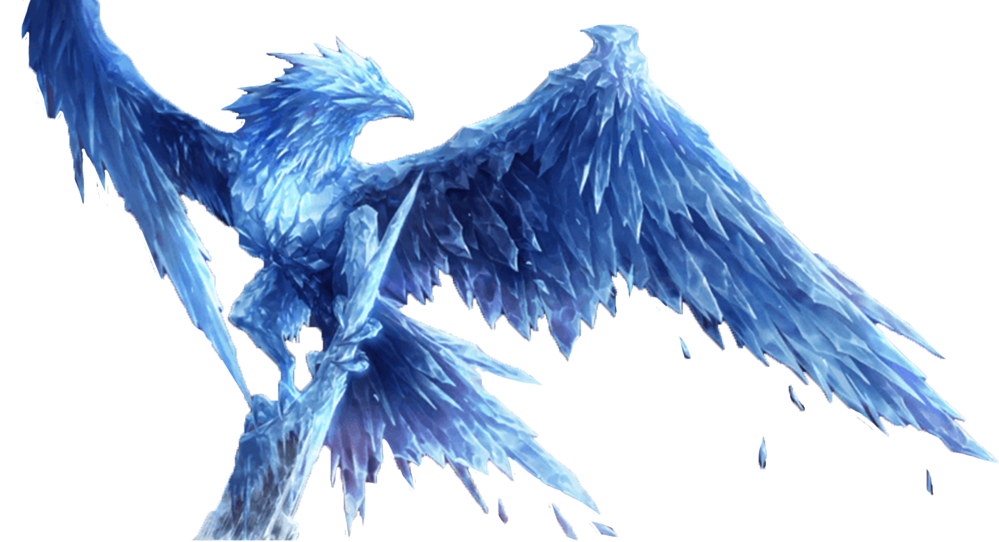

Zed
The Barbarian is a kilt-clad Scottish warrior with an angry, battle-ready expression, hungry for destruction. He has Killer yellow horseshoe mustache.

Anivia
The Barbarian is a kilt-clad Scottish warrior with an angry, battle-ready expression, hungry for destruction. He has Killer yellow horseshoe mustache.